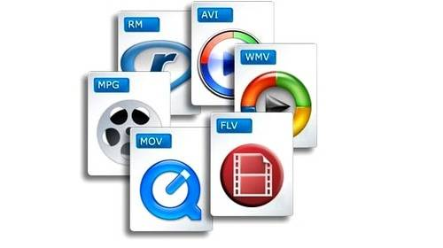

Un vídeo (en algunos países latinoamericanos pronunciado «video») es un sistema de grabación y reproducción de imágenes, que pueden estar acompañadas de sonidos y que se realiza a través de una cinta magnética. Conocido en la actualidad por casi todo el mundo, consiste en la captura de una serie de fotografías (en este contexto llamadas «fotogramas») que luego se muestran en secuencia y a gran velocidad para reconstruir la escena original.
Hoy día, si se dispone de la tecnología multimedia (hardware y software) necesaria para trabajar en el ordenador con vídeo digital. De este modo se pueden ver películas en el monitor, grabar imágenes reales en un archivo, realizar montajes de vídeo intercalando textos y sonidos, modificar las secuencias de una película, eliminar las escenas que no nos gusten, añadir otras, etc.
Si la señal de vídeo fuera de naturaleza analógica, sería imprescindible disponer del hardware y del software necesarios para convertirla en señales digitales y almacenar ese vídeo en un archivo compresible por el ordenador. Esta es la misión de la tarjeta digitalizadora de vídeo.
Estas tarjetas están constituidas por una serie de elementos, entre los que cabe destacar: entradas de vídeo (para conectar diversas fuentes de vídeo, como un reproductor de vídeo), entradas de audio (para introducir el sonido que acompaña al vídeo o el procedente de aparatos musicales), entrada de micrófono (para introducir sonido como, por ejemplo, una narración), salida de audio (para escuchar el sonido a través de unos cascos o altavoces), y conectores que enlazan la tarjeta digitalizadora con la placa base. Hace falta, además, un programa de digitalización(como VidEdit).
Una vez conectada la cámara de vídeo analógica a la tarjeta, se puede congelar una imagen (o una secuencia), guardar fotogramas, etc. y una vez en formato digital, se puede manipular en el ordenador.
Las cámaras de vídeo digitales graban las imágenes directamente en formato digital; por lo tanto, su información se introduce directamente al ordenador a través de un puerto específico para vídeo sin necesidad de tarjeta digitalizadora de vídeo.
Se han desarrollado diferentes formatos de vídeo digital para almacenar secuencias de imágenes (vídeos digitalizados) con o sin audio. Todos ellos codifican los datos (imagen + sonido) para transmitir la información de forma rápida y con la menor pérdida posible de calidad. Dependiendo del formato de vídeo que se quiera ver, habrá que utilizar un reproductor u otro. Entre los formatos con los que trabaja el ordenador, destacan:
| Nombre completo | Extensión | Compresión | Pérdida |
|---|---|---|---|
| Audio Video Interleave | AVI | Sí | Sí |
| Matroska | MKV | Sí | Sí |
| MOV | MOV | Sí | No |
| Moving Picture Experts Group | MPEG | Sí | No |
| Windows Media Video | WMV | No | No |